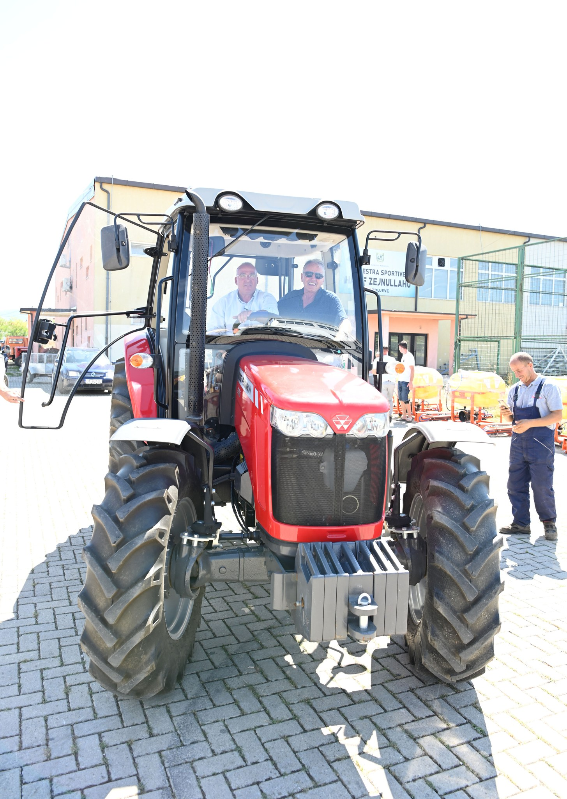
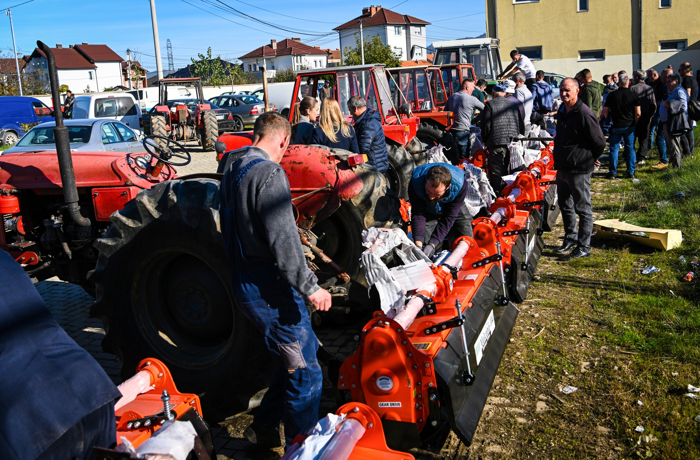

Detajet e Mbështetjes për Bujqësinë
Këtu mund të shihni detajet e plota të investimeve dhe mbështetjes që kemi dhënë për sektorin bujqësor në Podujevë.
Statistikat Kryesore
- 1Premtuam 2 milionë € subvencione, por e kemi tejkaluar këtë zotim duke dyfishuar fondet dhe duke u ofruar fermerëve përkrahje më të madhe se kurrë më parë.
- 2Fermerët tanë janë mbështetur me mekanizëm bujqësor, fara, plehra dhe inpute tjera, duke rritur prodhimtarinë dhe cilësinë e produkteve.e
- 3Kemi fuqizuar familjet bujqësore, kemi zhvilluar agrobizneset dhe kemi rritur konkurrueshmërinë e produkteve të Podujevës në tregjet vendore dhe rajonale.
- 4Kemi treguar se bujqësia nuk është vetëm mbijetesë, por një sektor që sjell të ardhura, punësim dhe perspektivë për qytetarët tanë.
Galeria e Fotove





